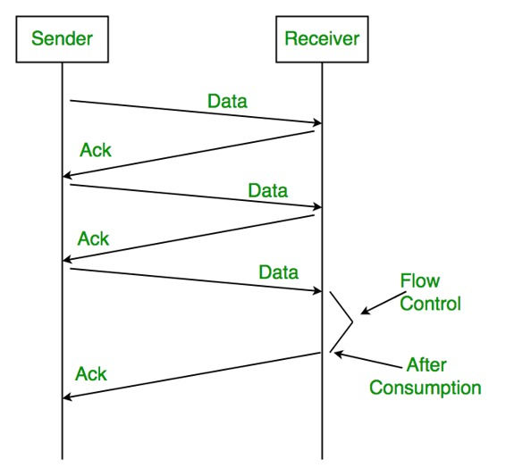
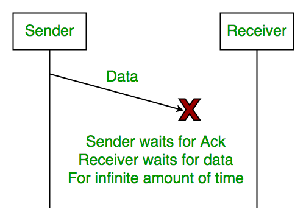
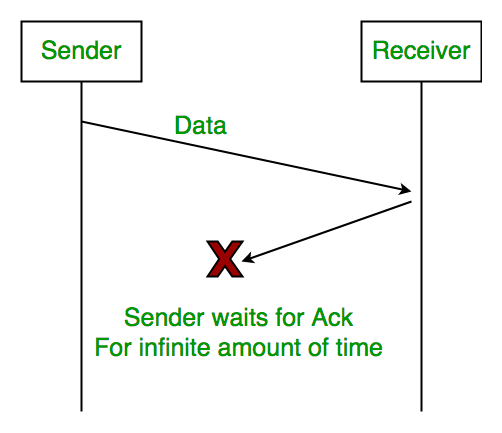
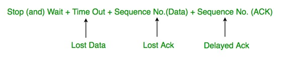
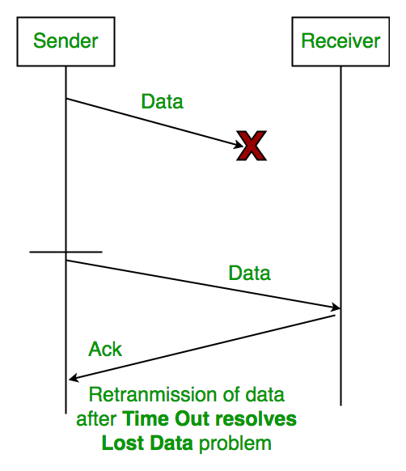
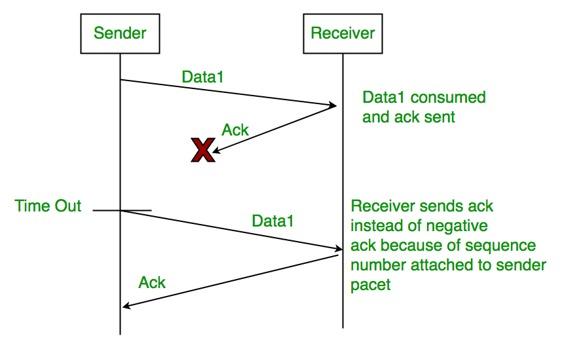

Characteristics
- Used in Connection-oriented communication.
- It offers error and flow control
- It is used in Data Link and Transport Layers
- Stop and Wait ARQ mainly implements Sliding Window Protocol concept with Window Size 1
Useful Terms:
- Propagation Delay: Amount of time taken by a packet to make a physical journey from one router to another router.
Propagation Delay = (Distance between routers) / (Velocity of propagation)
- RoundTripTime (RTT) = 2* Propagation Delay
- TimeOut (TO) = 2* RTT
- Time To Live (TTL) = 2* TimeOut. (Maximum TTL is 180 seconds)
Simple Stop and Wait
Sender:
Rule 1) Send one data packet at a time.
Rule 2) Send next packet only after receiving acknowledgement for previous.
Receiver:
Rule 1) Send acknowledgement after receiving and consuming of data packet.
Rule 2) After consuming packet acknowledgement need to be sent (Flow Control)

{kind=link}
Problems :
1. Lost Data

{kind=link}
2. Lost Acknowledgement:

{kind=link}
3. Delayed Acknowledgement/Data: After timeout on sender side, a long delayed acknowledgement might be wrongly considered as acknowledgement of some other recent packet.
Stop and Wait ARQ (Automatic Repeat Request)
Above 3 problems are resolved by Stop and Wait ARQ (Automatic Repeat Request) that does both error control and flow control.

{kind=link}
1. Time Out:

{kind=link}
2. Sequence Number (Data)

{kind=link}
3. Delayed Acknowledgement:
This is resolved by introducing sequence number for acknowledgement also.
Working of Stop and Wait ARQ:
1) Sender A sends a data frame or packet with sequence number 0.
2) Receiver B, after receiving data frame, sends and acknowledgement with sequence number 1 (sequence number of next expected data frame or packet)
There is only one bit sequence number that implies that both sender and receiver have buffer for one frame or packet only.
{kind=link}
Characteristics of Stop and Wait ARQ:
- It uses link between sender and receiver as half duplex link
- Throughput = 1 Data packet/frame per RTT
- If Bandwidth*Delay product is very high, then stop and wait protocol is not so useful. The sender has to keep waiting for acknowledgements before sending the processed next packet.
- It is an example for “Closed Loop OR connection oriented “ protocols
- It is an special category of SWP where its window size is 1
- Irrespective of number of packets sender is having stop and wait protocol requires only 2 sequence numbers 0 and 1
The Stop and Wait ARQ solves main three problems, but may cause big performance issues as sender always waits for acknowledgement even if it has next packet ready to send. Consider a situation where you have a high bandwidth connection and propagation delay is also high (you are connected to some server in some other country though a high speed connection). To solve this problem, we can send more than one packet at a time with a larger sequence numbers. We will be discussing these protocols in next articles.
So Stop and Wait ARQ may work fine where propagation delay is very less for example LAN connections, but performs badly for distant connections like satellite connection.
References:
http://users.ecs.soton.ac.uk/sqc/EL336/CNL-5.pdf